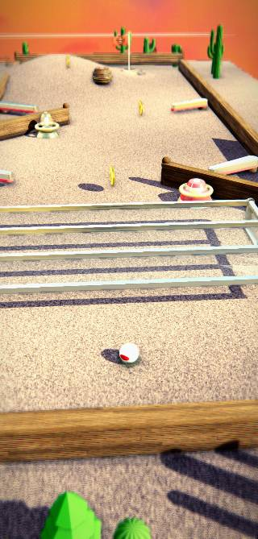
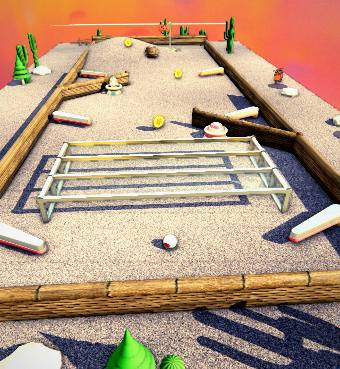
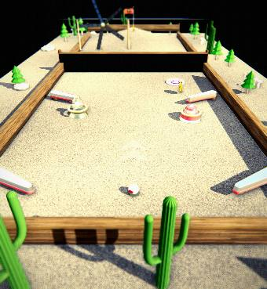
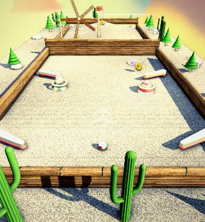
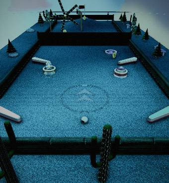
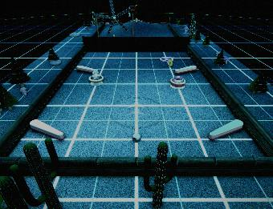
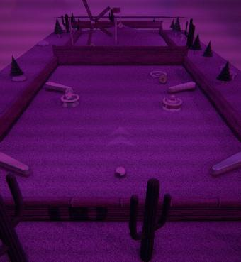

Real before / after photos of the live render. Before = v349 baseline. After = v371. Grades: before treated as 3/10, target 9/10. Updated 2026-06-24.
| Element | Before | After | Changes made | Grade | Next steps / analysis |
|---|---|---|---|---|---|
| Wall / curb |  v349 — flat box plank, sharp top |
 v371 — beveled body + rounded rail |
Body BoxGeometry → beveled ExtrudeGeometry (rounded edges, UVs remapped so wood maps). Rounded rail cap 18→32 segs. Deeper grain (normalScale 1.9), wood sheen, 16x anisotropy, spec-AA highlights. | 3 → 7 | To reach 9: visible board seams / plank separation on the face, stronger base contact-AO, hardware (bolts) at posts. |
| Whole scene (high-poly) |  v349 — faceted cones, 18-gon rails |
 v371 — smooth trees + round rails |
De-faceted scene-wide (4-agent audit): trees 7-seg flat cones → 5 smooth 32-seg tiers; rail caps 18→32; post domes 22→32; mushrooms, cannon, loop bands, windmill, tunnel, gate, pendulum, turntable, warp/portal, bouncer, barrel hoops all bumped. +2-6k static tris/hole. | 3 → 7 | Geometry is now handled. Next lever is texture/material fidelity + per-mood lighting — NOT more polygons. |
| Tron mood |  v371 — tinted desert, NO grid |
 v372 — glowing grid floor to the horizon |
Added a procedural neon grid-floor: canvas cyan grid texture, additive blending, tracks the ground under the ball, 11000-unit plane so it recedes to the horizon. Visible only in tron; the dark surfaces keep their cyan edge-glow on top. Now reads as a Tron grid world (matches the reference's defining feature). | 3 → 7 | To push higher: brighter neon bloom on the grid lines, a few red lanes like the reference, stronger cyan edge-glow on the obstacles. |
| Vaporwave mood |  v371 — current vaporwave look |
PENDING — being reworked to match the reference
TARGET (your reference): magenta neon grid floor receding to a horizon, cyan wireframe mountains, a big orange→pink gradient sun with scan-line bands, deep purple sky. Currently: a magenta/cyan tint over the desert, no grid/sun. |
Not yet changed this pass. | 3 → ? | Add a magenta ground grid + gradient-sun background image + cyan rim on geometry; pick a vaporwave background from the library instead of reusing the desert panorama. |